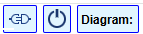

Following is a list of actions, accessible from the toolbar buttons, as well as from some context menus, or by mouse/keyboard shortcuts. Most of these actions can also be invoked from the hamburger main drop-down menu in the top of the toolbar:

- Main drop-down menu
- Start Here: it brings the start page
- Open the file system browser
- Open a template for the selected diagram type
- Open the Export dialog to export an ERD to a SQL script
- Undo the latest action (Ctrl+Z)
- Redo the latest action that has been undone (Ctrl+Shift+Z)
- Delete the selected element, or a selected group
- Copy the selected element or group (Ctrl+-C)
- Paste the selected element or group (Ctrl+V)
- Save the diagram - enabled if there are any edits (Ctrl+S)
- Save the diagram in a new copy (Ctrl+Shift+S)
- Refresh the diagram and reset the scaling
- Open the Search dialog (Ctrl_Shift+F)
- Clear the canvas without saving current edits
- Navigate to the previous diagram
- Navigate to the next diagram
 - Open the Settings dialog
- Open the Settings dialog
- Open the drop down help menu
- Shutdown the server and exit